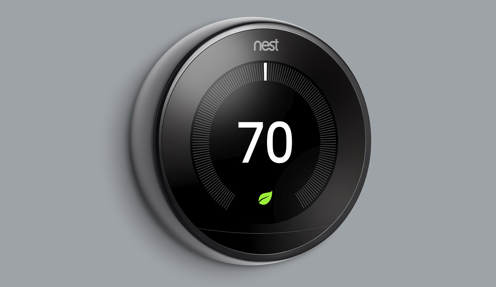

Technologi Collaboration for Software Development
Presented By :
Nover Halomoan
Riko Adrianto Tarigan
Teguh Dana Prayuda
Ijan Panjaitan
Ferdinan Roynaldo
Nest Thermostat
About Nest Thermostat
Nest Thermostat adalah sebuah alat yang dapat digunakan untuk menyesuaikan suhu didalam ruangan. kemampuan utama dari alat ini adalah mempelajari dan menyesuaikan jadwal penggunaan AC atau penghangat ruangan oleh pengguna. Nest Thermostat dilengkapi dengan sensor gerak yang mampu mendeteksi keberadaan orang di rumah dan memungkinkan pengaturan temperatur ruangan secara otomatis. Nest juga dilengkapi dengan Wi-Fi yang memungkinkan pengguna untuk mengontrol thermostat tersebut melalui aplikasi smartphone dan tablet. Tombol pada pengaturan di thermostat tersebut akan berubah menjadi merah ketika penghangat ruangan menyala dan biru ketika AC menyala.
Fungsi Nest Thermostat
Kemampuan utama dari Nest Thermostat adalah mempelajari dan menyesuaikan jadwal penggunaan AC atau penghangat ruangan oleh pengguna. Fungsi ini menghilangkan kebutuhan pengguna untuk melakukan pengaturan secara manual dan menurut desainer Nest, thermostat ini akan meningkatkan efisiensi penggunaan energi secara signifikan dibanding thermostat konvensional, karena Nest dibangun agar dapat mempelajari pola kehidupan sehari-hari dalam hal penggunaan energi. Itulah mengapa 99% Nest memiliki jadwal yang bekerja sesuai dengan pemiliknya. Nest akan menampilkan logo daun hijau ketika pengguna memutar tombol ke arah fungsi yang lebih efisien dan membantu mengatur temperatur rumah sesuai keinginan pengguna.
Fitur fitur yang ditawarkan
Kamera yang mengambil rekaman video dan gambar diam serta mendeteksi apa yang sedang terjadi di rumah.
Mikrofon yang merekam audio dan dapat mendeteksi suara atau gerakan tertentu di sekitar.
Sensor aktivitas yang mendeteksi aktivitas atau perubahan pada kondisi fisik perangkat, seperti sensor pintu yang
mendeteksi saat pintu terbuka, atau akselerometer yang mendeteksi saat perangkat dipindahkan.
Sensor lingkungan yang mendeteksi properti eksternal lingkungan di sekitar seperti suhu, kelembapan, cahaya, atau asap
dan dapat membantu memantau kondisi di dalam atau di sekitar rumah Anda.
Sensor kontrol yang memungkinkan kontrol perangkat, seperti tombol yang sensitif terhadap sentuhan, atau sensor magnetis
untuk mendeteksi posisi cincin di Nest Learning Thermostat.
-
Auto-Away
-
Jadwal Otomatis
-
Time-To-Temp
-
Early-On
-
cool to dry
-
Sunblock
-
Gelombang Udara
Vidio Masih Salah Nest Thermostat
Detail
* Display screen : 24-bit color LCD
* Display mass : 205.4 gram
* Display diameter : 5.3 cm
* Display height : 2.69 cm
* Power consumption : less than 1kWh/month
* Resolution : 480 x 480
* Battery : built-in rechargeable lithium-ion
* Wireless : Wi-Fi 802.11b/g/n @2.4GHz, 5GHz; 802.15.4 @2.4GHz; Bluetooth Low Energy (BLE)
* Sensors : temperature, humidity, near-field activity, far-field activity, ambient light
* Remote control requirements: Wi-Fi connection with internet access, nest app on phone or tablet with iOS 8 or later.
Kelebihan dan Kekurangan Nest Thermmostat
Kelebihan :
- Proses instalasi(pemasangan) dan konfigurasi mudah
- User Friendly
- Good looking
- Multi Fungsi
Kekurangan :
- Ada potensi untuk diretas
- Harga tergolong mahal
- Protector dan aplikasi diluar harga pembelian nest thermostat
-
Hiasan Dinding Multifungsi
DImana pada dasarnya, nest thermostat memiliki bentuk seperti jam dinding pada umumnya. Namun terintegrasi dengan pendingin/penghangat ruangan, sehingga bisa dengan mudah dalam mengatur suhu udara. Mau lebih dingin atau hangat, bisa disesuaikan secara manual atau otomatis dengan menjadwalkannya melalui ponsel. Jadwal ini bisa membuat ruangan sejuk di siang hari dan cukup dingin untuk di malam hari. -
Memperindah Ruangan dengan Teknologi
Nest Thermostat menggunakan layar Farsight, dimana semua penghuni rumah bisa melihatnya dari jarak pandang yang cukup jauh. Tampilan pada layar perangkat bisa dilihat hingga jarak 6 meter dengan sangat jelas. Pengguna pun bisa selalu memeriksa suhu ruangan secara berkala tanpa harus mendekatinya terlebih dahulu.